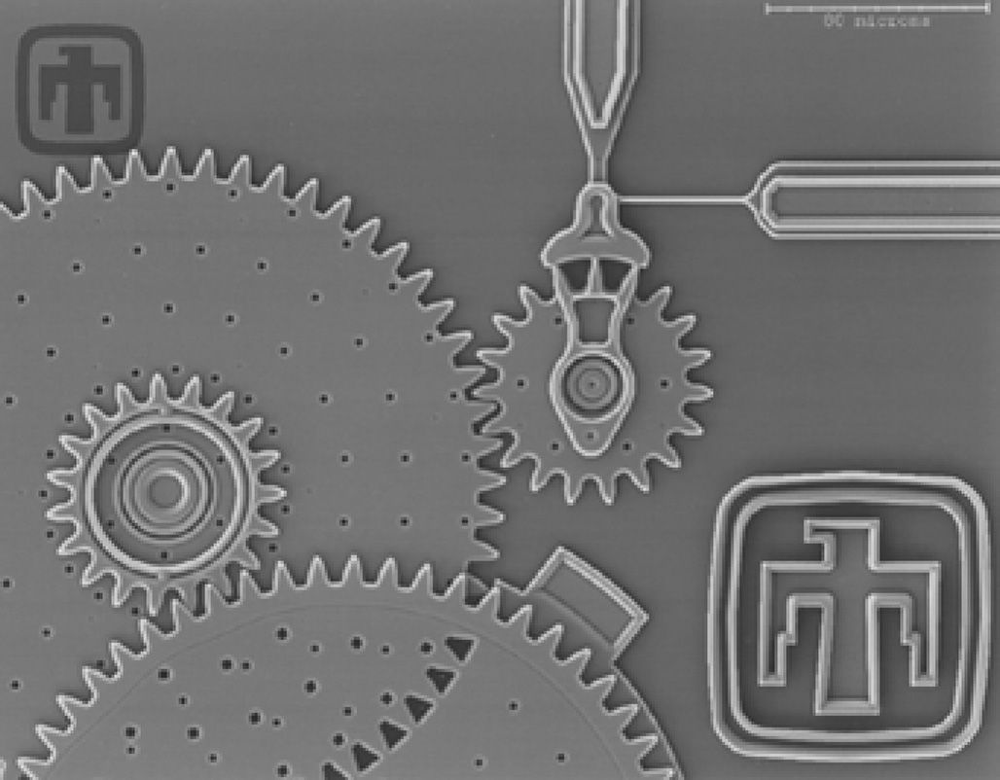
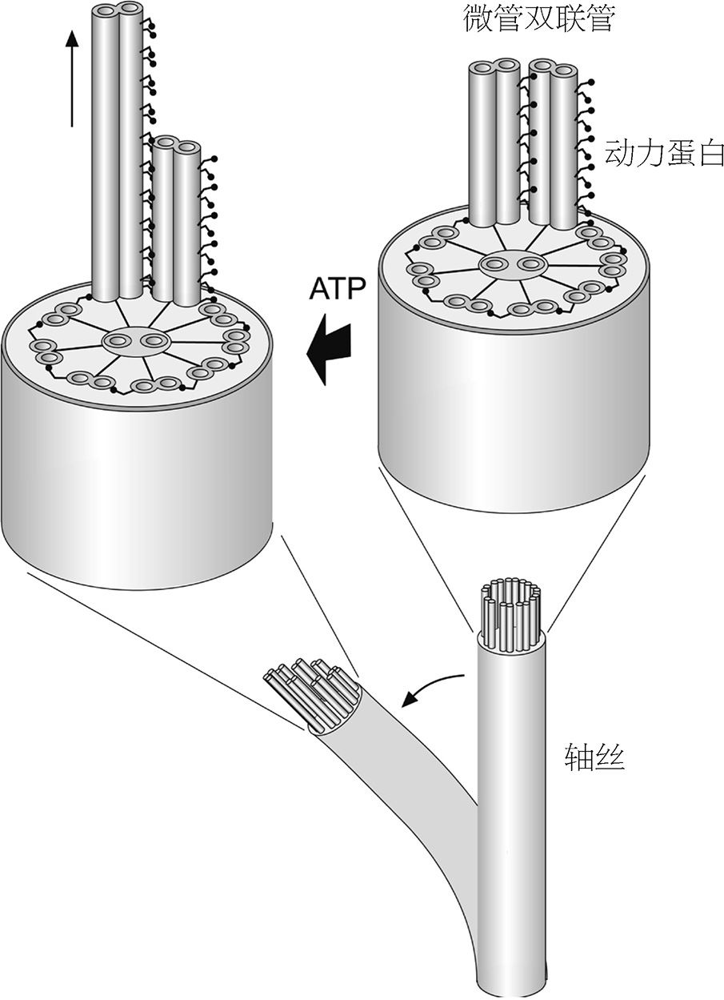
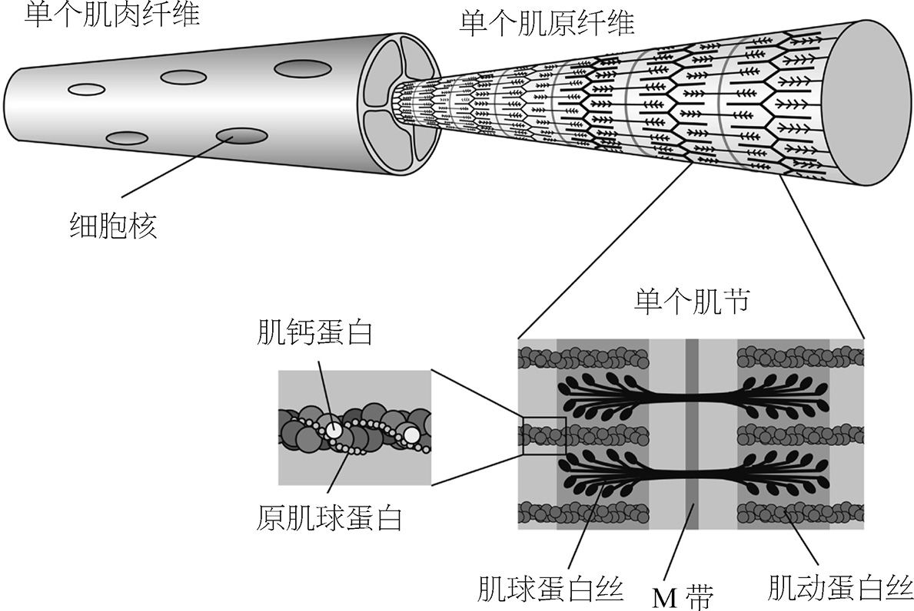
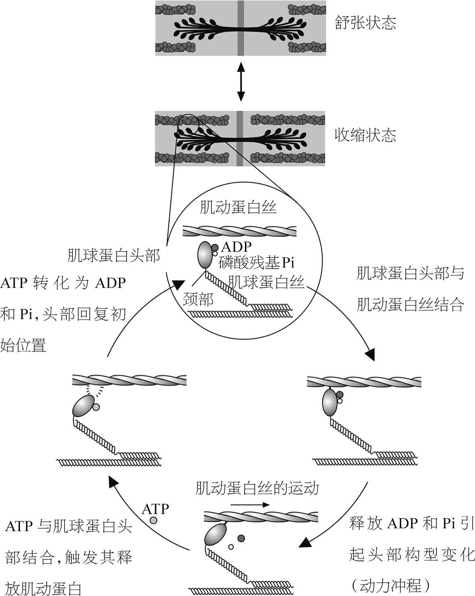
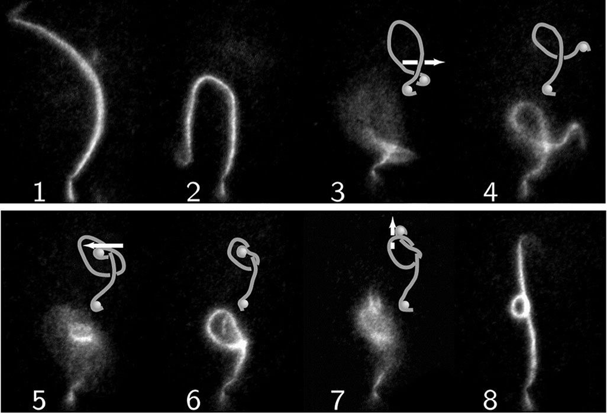
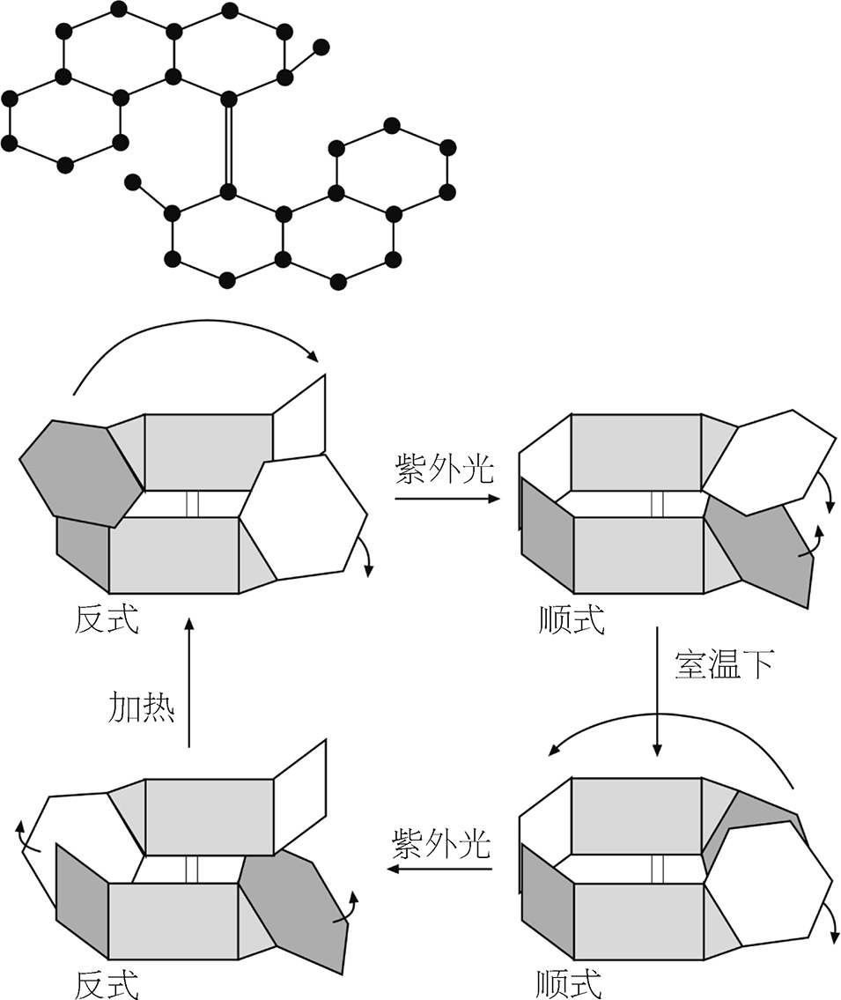
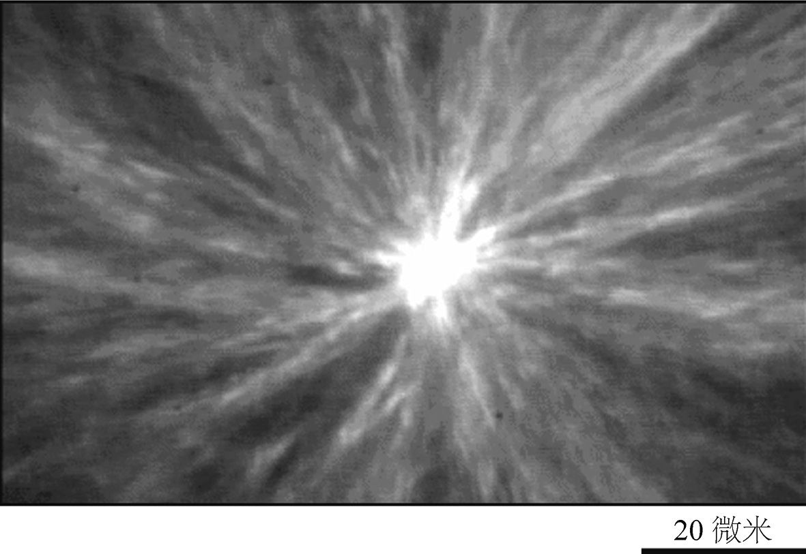
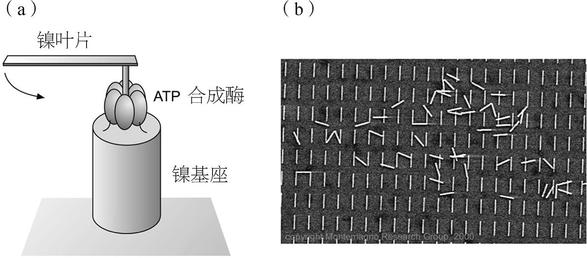

餐后演讲一般并不适宜发动革命。但理查德·费曼1959年在美国物理学会西海岸分会上的演讲是个例外，他不是个常规的物理学家。费曼是20世纪战后最具创造性的科学思想者之一，这个世界铭记着他鲜活的形象——邦戈鼓手，恶作剧大王，保险箱破译高手，现代科学中一个搞怪的形象。
费曼1959年的演讲意气风发，但他的意图是相当严肃的。他称演讲的题目为“底下还有充足的空间”，内容是有关肉眼无法看到的微小尺度上的工程。“我所想要讲的，”他说，“是在小尺度上操纵、控制事物的问题。”费曼说，所谓“小”，并不是指“小拇指指甲盖大小的电子马达”。他指的是像原子一样小的尺度。
“想象一下，”他接着讲道，“假设我们能够一个一个地按照我们的意愿来安放原子。”他看到，这实质上正是化学家努力要做到的：
当化学家想要造一种分子时，他会做神秘的事情。他发现必须要获取那种环，于是就把这个和那个混合在一起，摇一摇，瞎弄弄。经过一番困难的过程，最后他一般都能成功合成想要的东西。
你能看到，在物理学家眼中，化学家并不比外行高明多少。不过，费曼这番描述倒与普里莫·莱维对化学家如何像工程师建造桥梁一样建造分子的说法有些异曲同工之妙（参见第24页）。但其中的区别是，化学家习惯于将分子看作一种物质，能够结晶的东西，能够放在瓶子里的东西。而物理学家则将它看作一种结构体，就像是发动机的零部件。
本质上讲，费曼所思考的其实是物理学家能否找到办法去做化学家的工作，但他披了一件工程师的外衣。我们能不能通过一个一个码放原子来制造分子呢？1959年的时候，这件事对任何人来说都是无法设想的，但想象力魔术师费曼就想到了。
不过他并非毫无根据地瞎想。即便在当时，事实也清楚地表明技术会向越来越小的方向发展。1940年代晶体管的发明缩小了电子学的尺度。人们替换掉放满真空管的笨重箱子，转而使用密集式器件，里面包含了硅晶体管制成的“固态”电路。便携式晶体管收音机出现在了美国的每一处海滩上。当时工程师在制造微小的机械零部件方面的技艺水平已经日益提高——实际上远高于费曼所认识到的程度。费曼当时提供了两笔奖金，各一千美元，希望能够对微型化技术的发展起到些小小的促进作用，奖金由他提供：第一项是制造出各方向尺寸均不大于1/64英寸的电子马达，第二项是将书上一页纸的内容写在微缩的面积上，按比例缩小为原来的1/25 000。费曼大概以为这笔钱好几年都不会有人拿走，可没想到有人（一位名叫威廉·麦克莱伦的工程师）短短几个月后就完成了他的第一项挑战。
今天我们可以走得更远。我们能够用酸蚀法或者电子束法在硅片上雕刻微小的齿轮和马达，大小只有十分之一毫米（如图25）。但若将尺度缩小到大约十分之一微米，要在材料片上蚀刻就不好办了：当前使用的硅集成电路制造方法有局限，蚀刻出的导线只能细到这种尺度。要是比这个尺度还要小，这种方法就不能用了——这就好比要用切面包的刀劈开人的头发丝一样。

研究人员开始思考，这种“自上向下”的方法在这种尺度上是否还有意义。其实这种小元件的尺度和分子更加接近（中等大小的分子是这个尺度的百分之一），离咱们看得见摸得着的硅片反而更远。那我们是否应该从单个的分子出发，自底向上地来制造东西呢？
普里莫·莱维在《猴子的扳手》中承认，化学家们幻想着一种能用于分子尺度建造的工具包：
我们晚上做梦都想要一套前所未有的镊子，就像干渴难耐的人梦见一泓清泉。这种镊子能让我们夹起一段分子，牢牢地夹住，让它拉直，然后按正确的方向和已组装好的部分粘在一起。如果能拥有那种镊子（可能某一天会有的），我们就可以创造很多迄今只能由万能的神创造的漂亮东西，组装青蛙或蜻蜓大概还不行，但至少组装个微生物或者霉菌孢子还是可以的。
费曼同样在分子器件和人工生物中找到了灵感：“在其中化学作用力会反复地使用，制造出各种奇怪的效应（也包括作者这种奇怪的东西）。”他意识到生物学中已经有分子机器的存在。在1959年，若是这番演讲被生物学家听到了，必定会被斥为愚蠢的物理学家妄图将自己的个人观点强加到他一无所知的领域。不过今天的生物学家已经很乐于用分子机器的名义来讨论蛋白质。
这一章，我们就来看看最引人注目的那些产生运动的蛋白质分子。它们就是分子马达，也常称作马达蛋白。和它们对比起来，当初赢得费曼奖金的那个微马达只是个粗笨的庞然大物，就像拿笨重的恐龙和灵敏的跳蚤相比。马达蛋白的生物重要性无可估量。若是没有这些蛋白质，我们就无法活动肌肉，鸟无法飞上天空，鱼无法横渡海洋，连细菌都无法活动。还有更严重的后果：细胞无法分裂，于是就再也不会有繁殖。失去驱动运动的分子，生命将不复存在。
但就分子世界的工程师而言，马达蛋白还告诉了我们别的东西。它们表明，分子尺度的工程是可能实现的：我们可以把日常世界中熟悉的思想缩小到分子的王国。从这个角度看马达蛋白并非唯一的，只不过它们十分明确地向我们展示了这一点。我将讲述我们有可能怎样通过制作定制的分子马达，从零开始来实现类似的目标。这将引领我们走向纳米技术 （纳米尺度下的技术，纳米即为可用分子来度量的长度）的竞技场。在这条路上，理查德·费曼的演讲就是第一处清晰的路标。
分子的形状永远都不是固定的，它疏松的部分会一直振动、摇摆。分子世界中，机械运动无处不在。
但一般而言，分子运动要么是随机的——如聚合物长链漂在溶液中弯曲着蠕动，要么是平均化之后为零——如化学键伸缩式的振动。而真正的马达与此相反，我们需要它朝特定的方向运动——可以称之为有目的性的运动。
任何马达都要消耗燃料。你可以把这看作有规则运动无可避免的成本，是热力学第二定律强制的代价。而相反，随机分子运动就可以“免费”地进行，它无规则的分子摆动正是热的体现。
我们体内进行着很多种带有方向性的运输。比如，纤毛（像毛发一样附着在呼吸道中，包括肺部和气管）的运动能将一层黏液从肺部一直输送到喉咙，在这里就会聚集成为痰。这种黏液能够捕获灰尘，因而输出它可以维持肺部的清洁。为了将黏液向上送到气管，纤毛不能只是随意摆来摆去，而需要步调协调，有秩序地移动，就像游泳时手臂运动那样。它们运动时先像鞭子一样来一记“猛抽”，之后再缓慢地“回复”。某些单细胞原生生物的确就利用细胞表面的纤毛在水里游动。
驱动这种运动的分子马达是一种蛋白质，称作动力蛋白。每根纤毛都含有微管（参见第63页），微管围成一圈形成一支更大的管，称为轴丝。微管两两一组结合成双管，就像双筒枪那样。每个轴丝有九对双联管，双联管之间通过动力蛋白相互连接，动力蛋白就是双联管上的小突起，每隔一段就有一处，分布得很有规律，像多足的蜈蚣（如图26）。

为了移动轴丝，微管会交错爬行。每个动力蛋白分子都有“一条腿”，消耗ATP发生反应可以使“腿”弯曲。动力蛋白大体上就是一种酶，它分解ATP来改变自己的形状。这个反应同时还需要钙离子来触发。神经信号可以通过控制是否向纤毛注入钙离子来控制这个运动。
由于动力蛋白分子指向的方向都相同，因而微管弯曲时，双联管中的一支就会沿另一支身上爬行。如果分子只是单纯地又再次伸直，那么微管也就会回到原来的位置。为了产生向前的运动，每个动力蛋白在伸直之前，会先将自己从另一支微管身上解离开来，伸直后又再次附着在另一支微管身上，为下一轮“动力冲程” 注 做好准备。只有当动力蛋白的“脚”附着在另一支微管身上时，它才能够分解ATP并转换到弯曲状态。
所以，双联管的交错运动过程就类似于棘轮，不断重复着附着、弯曲、解离、伸直的循环过程，动力蛋白就在这个循环中产生了向一个方向的运动。而由于微管的末端固定于轴丝的底部，这样的交错滑动就会带动鞭毛弯曲。滑动若能够协同配合，鞭毛就能够来回弯曲。这个协作似乎是由于一对微管沿着轴丝中心运动，但具体怎样实现的人们还不清楚。
动力蛋白在细胞世界中发挥的作用更加普遍：它就是负责输送货物的引擎之一。我们的细胞中交织着微管构成的内部铁路网。细胞时不时需要重新排列内部的各个隔间，即带有膜的结构，称作细胞器。动力蛋白可以附着在膜壁上，沿着轨道推动细胞器。
这些行程是单向的。微管的两端并非完全相同：只有其中一端才能添加或除去微管蛋白（参见第64页），这一端称作正端。动力蛋白总是朝向微管的另一端，即负端运动，负端位于细胞的中心。当细胞一分为二时，动力蛋白能够沿着纺锤体中的微管，拉开已经复制好的染色体（参见第65页），把它们拉向两个新生子细胞的中心。
要想向微管另一端（正端）运输，就需要用到另一种不同的马达蛋白，称作驱动蛋白。驱动蛋白大概是所有能够驱使运动的分子中最具拟人化特点的，它有两条“腿”，可以一前一后“蹒跚而行”，而动力蛋白则只有一条“腿”，只能像虫子一样蠕动。驱动蛋白同样要消耗ATP来发生反应，使得蛋白质的形状发生变化。
驱动蛋白是细胞的邮递员，将包裹从一个细胞器运送到另一个细胞器。比如，蛋白组装好之后，需要从它的制造地（内质网）运送到细胞中需要它的地方。于是它们会打包进一个膜结构的小球之内，称为运输囊泡，然后由驱动蛋白携带着运输囊泡沿着微管网络运送到合适的地方。
我们人类自己的行走是通过肌肉的收缩和拉伸而实现的。骨骼肌一缩一伸，像弹簧一样收紧舒张，就控制了我们所有的运动，从钢琴家手指灵巧的飞舞到运动员大腿健壮的弹跳。
骨骼肌也是大自然具有层级结构的一种分子材料（参见第53页）。它由一束一束的纤维组成，纤维又由小纤维组成，小纤维又由更小的纤维组成。每一个肌肉细胞都非常细长，里面包含很多股由纤维编织而成的绳索，称作肌原纤维。这些绳索拥有复杂的分子亚结构，肌肉收缩的秘密就蕴含在其中。
在显微镜下观察，肌原纤维有不同宽度的明暗条纹。骨骼肌在高放大倍率下呈现条纹状，因此我们也称其为横纹肌。条纹序列周期性地沿着肌原纤维重复出现，一个重复单元称为一个肌节。肌节中不同的区域还拥有通俗的名字，如A带、H带等——人们之所以这么叫恰恰也暗示了，当它们最早被观察到时，谁也不知道它们到底表示什么。
安德鲁·赫胥黎、休·赫胥黎和他们的合作者在1950年代注意到，当肌肉收缩时，这些带状区域的宽度会变化，于是他们提出了肌肉运动的肌丝滑行理论。他们认为，肌原纤维包含牙刷头形状的结构，且这样的结构两两相对，于是彼此的刷毛相互交叉。每个肌节含有两组这样的刷头组结构，处于背对背的位置。暗带就是刷毛交叉的地方（从而分子密度较大），而亮带则是只有一侧刷毛的地方（如图27）。两位赫胥黎提出，肌节中的刷毛可以相互交叉得更深，于是肌原纤维缩短，使得肌肉收缩。
肌丝的相对运动是肌球蛋白这种马达蛋白所驱动的。肌球蛋白呈瘦长形，上面有两条螺旋链相互盘绕。链的两端终止于梨形的端头。肌球蛋白分子聚集成束，称作肌球蛋白丝。肌球蛋白丝刷毛的每个末端都布满肌球蛋白的端头，像扎成一捆的玉米秸秆，顶端有一颗颗玉米。
穿插在肌球蛋白束中间的是由另一种称作肌动蛋白的蛋白质组成的肌丝。这种蛋白质事实上是球形的，小球会连接成链状，像项链上的珠子。肌动蛋白丝上，两条肌动蛋白“珠链”彼此盘绕，又形成一种双螺旋。项链上还装饰有原肌球蛋白形成的细线，沿着肌动蛋白丝一起盘绕。项链上每隔一段距离还有一个球形的肌钙蛋白（如图27）。

当肌球蛋白的端头将自己附着在肌动蛋白丝上并拉动时，肌肉就发生了收缩。它的原理与动力蛋白、驱动蛋白沿微管运动的原理是一样的：ATP分解为ADP，推动附着的马达蛋白形状改变，从而产生运动。肌球蛋白头部通过铰链似的颈部与分子其他部分连接在一起，头部可以围绕颈部摆动。头部发生一连串动作：旋扭，从肌动蛋白上解离，解扭，重新附着到肌动蛋白上，循环往复，间歇性地发动动力冲程，如棘轮般沿着肌动蛋白丝转动（如图28）。

这整个过程都受到自发的控制，从大脑处来的神经冲动告知肌肉是收紧还是放松，从而产生相应的运动。肌动蛋白丝上的原肌球蛋白和肌钙蛋白就起到这个开关的作用。肌肉通过称为运动神经元的神经细胞与大脑相连，像一种生物化学式的电线“焊接”在肌肉纤维外部。电信号传递到运动神经元末端时，就会触发钙离子从一个管道网络——肌浆网——中释放，并扩散到肌肉纤维内部的肌原纤维之间的空间。钙离子被肌动蛋白丝上的肌钙蛋白捕捉到，促使蛋白质改变形状。这继而拉动原肌球蛋白链，拧转肌动蛋白双螺旋项链，使珠子般的肌动蛋白旋转。正是这种旋转使得肌动蛋白上的结合位点暴露给肌球蛋白。这整套结构包含了精致的分子传递机制，巧妙地控制肌肉收缩运动的开关。
曾经一度，分子科学家们不得不通过同时测量上亿的分子来推断关于分子的知识。这个任务风险很大，我们难以确定测量的结果究竟是否与我们关心的单个分子的性质有关，就好比在足球场和大剧院里噪声密集，无法听到其中个体观众的私人对话。但随着实验技术的进步，人们现在可以研究单个的分子了——分子长什么样，分子之间如何相互作用，分子怎样运动——这在过去的20多年中为分子研究开辟了崭新的空间。我们渐渐地开始去认识作为个体的分子。
其中有一项关键的创新，是人们发明了用于操纵分子的镊子——正是普里莫·莱维所渴望的那种工具。这种镊子最引人注目的并非它有多精致，而是它完全无形，是由光构成的。它称作光镊，利用高强度的激光束来捕捉目标。我们日常就机械马达会关心一些基本问题：效率如何？负荷量有多大？跑得有多快？而光镊使得研究者们能够回答这些关于马达蛋白的类似问题。
光与分子中的电子之间相互作用，能够在目标物质上产生一种力—— 一种“光压”。若目标足够小，光的强度足够大，那么这种力就足以移动目标。当两束乃至多束激光交叉时，会在光镊中产生一个极亮的光点。这个亮区中的小目标会受到来自各个方向的光压，阻碍它向各个方向运动。于是，它就被激光束镊子构成的陷阱给抓住了。当光束移动时，目标物也会随之被拉动。
于是我们可以测量单个马达蛋白所产生的力，只要将马达蛋白（或者它所沿之运动的物质，如肌动蛋白丝）拴在被光镊夹住的微观小塑料球上。马达产生的运动能够将小球拖出陷阱中心，而位移量就正比于马达产生的力。
利用小球作为操纵把手，就可以用光镊对分子做非常特别的事情。日本庆应义塾大学的木下一彦和同事们将小珠附着于肌动蛋白丝的两个末端，然后拉动两端使它们穿过自身形成的环，创造了一个分子纽结（如图29）。它们将纽结拉紧直至断开。由于肌动蛋白丝较为僵硬，如同树苗的枝杈，因此在高度弯曲时就尤为脆弱，拉断打结的肌丝就远比拉断未打结的所需力量小。

光镊并非操控单个分子的唯一工具。实践证明，1980年代设计出的一类称作扫描探针显微镜的仪器（图5的照片就是用它拍摄的）不仅在观察方面颇具价值，操控分子世界也能力不凡。原子力显微镜（AFM）是这类显微镜中的一种，它允许研究人员探究分子的力学性质——例如分子的硬度或弹性如何。AFM能够抓起分子的一端，像拉橡皮筋一样拉动它。
K.埃里克·德雷克斯勒是一位独立科学家，他领导着加利福尼亚州的前瞻学会，更是纳米技术领域最杰出的预言大师之一。德雷克斯勒的预见，大体上是设计分子尺度的自动组装机器人，能够一个原子一个原子地造出各种分子机器（也包括这些机器人自身），这种想法在公众对纳米技术前景（以及危险）的观感中颇具影响，在科学家之间反倒不那么流行。一些科学家担心，德雷克斯勒在原子组装机器人方面的想法忽视了原子结合时无可避免要释放出的热。而且，分子的形状虽各式各样，却并非随心所欲：我们无法保证，某种特定的纳米技术元件的分子尺度设计图就一定对应着一种稳定的原子排列方式，甚至都不一定是能够实现的排列方式。
德雷克斯勒于1986年在《造物引擎》一书中首次概述了他的思想，其中的主角（有时又是反派）就是纳米技术机器人。不过如今技术上已经实现从零开始造出可控的分子马达，虽然相当低级，但其本质已经是个造物的引擎。利用这种器件，我们就可以把分子尺度的直杆、横梁及其他建造部件移动至适当位置，再结合起来。
虽然马达蛋白使用ATP作为能源，一些研究者却想到，合成分子马达可以利用光作为能源。1999年，荷兰格罗宁根大学的本·费林加所领导的化学家课题组设计出一种旋转分子马达，其中转子能够受到光的驱动朝一个方向旋转。 注 他们利用的是感光异构的过程，即光诱导的分子两种不同形式（异构体）间的转化；两种形式的化学构成相同，但形状不同。
他们构造的分子含有两片相连的螺旋桨叶片状的部件（如图30）。起先，两片螺旋桨分别处于分子相反的两侧，称为反式 异构体。而紫外线能将分子转化为顺式 异构体，即两个叶片处于同侧。为了使两者不致相撞，叶片会发生扭曲，一个向上，另一个向下。当分子加热至20℃以上时，叶片就会交换至相反的构型：原先向下的变为向上，而原先向上的变为向下。交换后的构型比原来的稳定性略强。再一次用紫外线照射它，它会重新从顺式变成反式。但由于之前刚发生了一次翻转，所以现在的反式与最初的也略为不同：两个叶片都是向下弯曲，而不是向上。将分子加热至60℃就能恢复至原来的构型。

这四步过程的总体效果就是螺旋桨叶片围绕彼此完成了一周的旋转，旋转的方向是预先设计好的。若将分子保持在60℃以上，且持续地用紫外线照射，它就能不停地转动下去，成为消耗光能的分子马达。
波士顿学院的罗斯·凯利及合作者们制造出另一种不同的旋转器件。他们构造出一种含三个叶片的螺旋桨，连接叶片的转轴上还有“制动器”可以阻碍螺旋桨旋转。若没有制动器，螺旋桨也能够转动，但会随机地向两个方向之一旋转。研究者们使用制动器，让叶片与制动器之间发生一系列化学反应，使它只向一个方向旋转。但截至目前，他们还没找到办法拉动螺旋桨旋转超过三分之一圈。
这两种器件都非常初级，无法完成有用的工作。但它们展示了，在原理上分子马达可能会如何构造。驱动凯利的分子马达需要一系列成键和断键，看起来很麻烦，可毕竟驱动蛋白和肌球蛋白的线性运动也需要相似的反应过程。在分子的尺度上，这类过程能够发生得很快，足以产生看起来流畅的运动。
合成分子马达要想与天然的马达蛋白比肩，还有很长的路要走。完全人工制造它们真的有意义吗？有没有可能调整现有的马达蛋白并与其他纳米技术相结合呢？一些研究人员已经将马达蛋白从细胞中分离出来，并用化学手段修饰它们，使它们能够完成新的任务。
1997年，普林斯顿大学的斯坦尼斯拉斯·莱布勒和同事们从马达驱动蛋白出发做出一种器件，能够将微管排列成有组织的模式。他们用化学手段将四个驱动蛋白连接起来，形成的组合体很像带四条腿的生物。将其与微管混合在一起，并加入ATP，这些驱动蛋白组合体就会一个接一个地拉动微管，最终形成星状结构（如图31），非常像细胞分裂第一阶段所形成的结构（参见第65页）。

在西雅图的华盛顿大学，维奥拉·沃格尔和同事们利用驱动蛋白成功地在表面上朝选定方向推动微管。他们在表面上施以聚四氟乙烯涂层（PTFE）—— 一种不粘涂层，更通俗的名字是特氟龙——再将驱动蛋白分子附着于表面上。涂层是通过摩擦一块PTFE施加上的，于是在摩擦时，聚合物膜就沿摩擦方向形成了凹槽和凸脊的条纹结构。聚合物长链的方向应当与这些凸脊的方向平行。驱动蛋白分子就倾向于附着在这些凸脊上，也就是说它们会排成定向的列状。当微管传送的时候，这些列就成为线性的轨道：驱动蛋白分子像水桶传递接力那样一个接一个地传送微管。在细胞中，微管分子是“固定的”，驱动蛋白是运动的。而在这些实验中，马达蛋白固定在表面上，于是它们的行走运动就推动了微管。
迄今为止，生物分子马达与人工微工程领域最激动人心的融合发生在2000年底，是由纽约州伊萨卡市康奈尔大学的卡罗·蒙泰马尼奥和同事们所实现的。他们使用分子旋转 马达推动了一个微观的金属螺旋桨叶片，叶片大约150纳米宽，长度约为宽度的十倍。我们之前曾提到过的ATP合成酶有一个头部，在将ADP转化为ATP时，头部绕着与膜相连的转轴旋转（参见第83页）。蒙泰马尼奥和同事们用金属镍蚀刻出微观的基座，并将ATP合成酶的头部固定在基座上，再将金属叶片固定在转轴上。在适当的条件下，ATP合成酶能够反向工作，将ATP分解为ADP，同时旋转。研究人员向转子提供ATP启动这一过程，继而看到它们在显微镜下开始旋转，平均每秒转五圈（如图32）。

这样的研究拓展了利用分子马达实现分子受控运动的前景，也为化学合成带来了分子尺度这一全新的层面。化学家不必再依赖于漂浮在溶液中的分子随机游荡、碰巧相遇，而可以精确地指定分子应当前往哪里。因为大自然已经设计出了用于这一目标的一系列奇妙的分子机器，所以我猜测分子纳米技术学家会越来越多地利用细胞中的小机器，而不是从头开始设计。这不仅是面向产生机械运动的问题，也面向能量产生、传感器、信息处理等很多领域。我们可能会见到生物学与从前截然不同的学科融合起来，比如机械工程、电子工程等等。正由于这个融合会带来学科独自发展所无法取得的成果，我们可以给它起个新名字，称之为生物协同工程 。